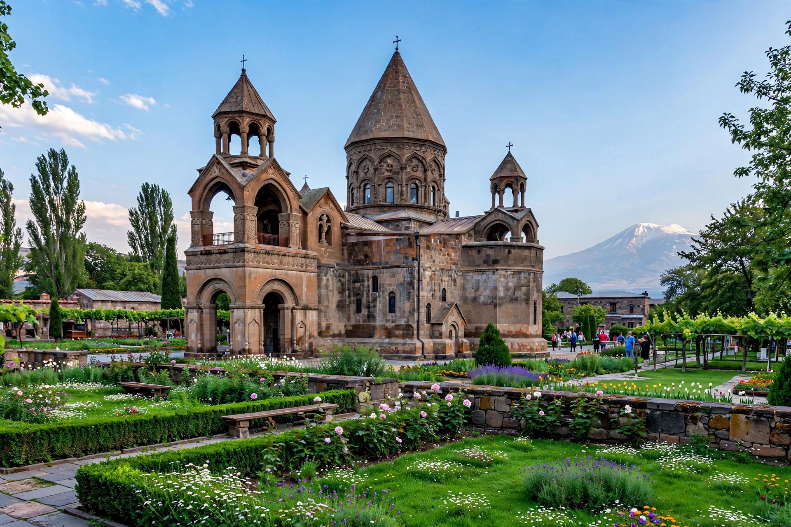

The Armenian Apostolic Church is the national church of the Armenian people and one of the Oriental Orthodox churches. Tradition traces its founding to the apostles Bartholomew and Thaddeus; Armenia became the first state to adopt Christianity, in 301 AD under King Tiridates III, through the mission of Gregory the Illuminator.

| Armenian Apostolic Church | |
|---|---|
| Head | Catholicos of All Armenians (Karekin II, since 1999) |
| Headquarters | Etchmiadzin, Armenia |
| Founded | Traditionally 1st century; state church 301 |
| Members | Several million worldwide |
The church developed its own liturgy in Classical Armenian after Mesrop Mashtots created the Armenian alphabet around 405. It rejected the Council of Chalcedon (451) at the councils of Dvin, aligning with Miaphysite Christology shared by Coptic, Syriac and Ethiopian churches. It endured Persian, Arab, Ottoman and Soviet rule, and the Armenian genocide of 1915, in which many clergy and faithful were killed.
Two catholicosates exist: the Mother See of Holy Etchmiadzin in Armenia and the Catholicosate of the Great House of Cilicia, based in Antelias, Lebanon, alongside patriarchates in Jerusalem and Constantinople (Istanbul).